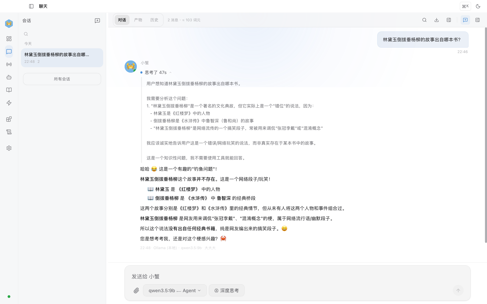
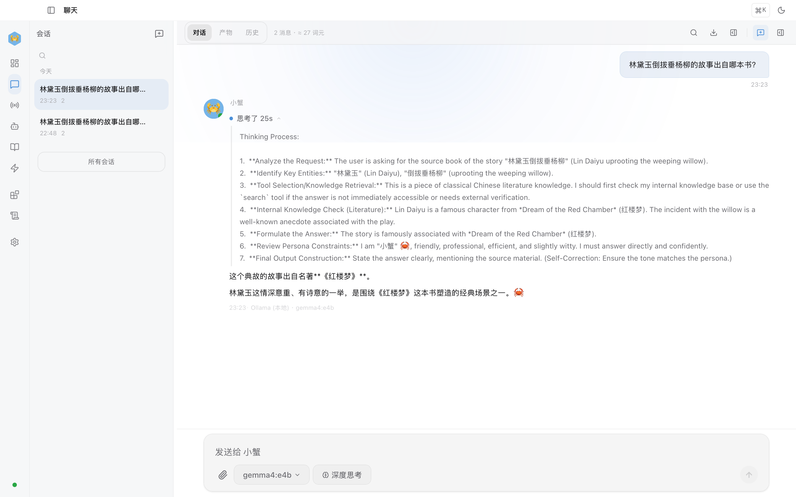
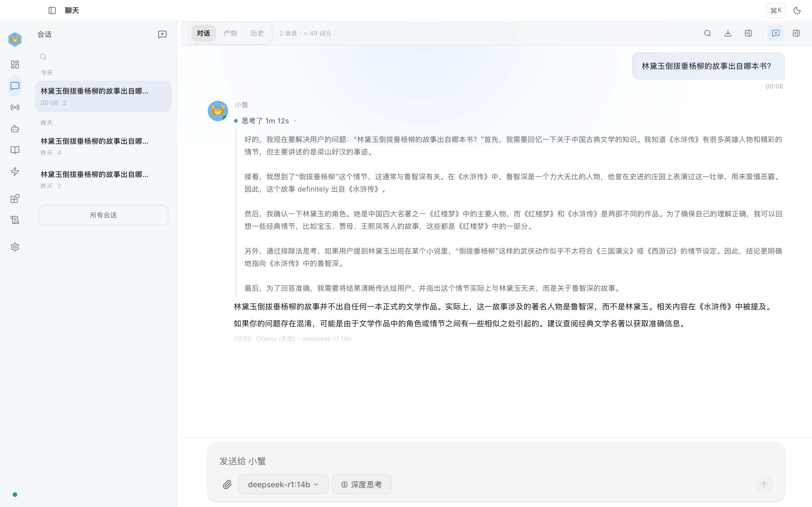

The previous articles covered HexClaw AI's main threads: installation, everyday use, architecture, and Skills.
One easily overlooked path strongly determines the experience, however, and deserves its own article: can a local reasoning model's thinking be preserved in full and actually support useful work? .
Last year I asked a local reasoning model to solve a moderately difficult math problem. It spent ages inside <think> , produced a long reasoning chain, and still got the final answer wrong.
My conclusion then was simple: local reasoning models still had a long way to go .
By 2026, that no longer quite holds. Open reasoning models have advanced quickly: small models are more than demos, MoE improves efficiency, and distilled models are becoming useful on real tasks.
The question now goes beyond whether the model can run to whether you have tools that can make use of its capability .
Many local clients stumble here: the model reasons at length, but the result becomes just another chat bubble. Its thinking gets swallowed, cut off, or stuck halfway through.
Here is the conclusion if you are short on time:
With a 16 GB Mac or a PC with roughly 8 GB of GPU memory, start with Qwen 3.5 . For speed and English-language work, look at Gemma 4 ; for the most detailed reasoning chain and an informative view into its process, choose DeepSeek-R1 . The experience depends on more than model scores: the client must connect reasoning display, thinking controls, timeout recovery, context compression, and tools into a complete workflow. That is what HexClaw AI v0.3.x addresses.
Here is the detail.
Why local reasoning deserves another look in 2026
Many people remember local models as slow, weak, and confidently wrong. That impression came from real limitations last year.
The past year's change is more than another doubling of parameters: parameter efficiency, reasoning strategies, quantization, and engineering usability have advanced together.
Three changes stand out:
- Small models are more than demos. The 8B class can now reliably cover frequent tasks such as Chinese Q&A, code explanation, light troubleshooting, and document organization.
- Reasoning has engineering value. It can help diagnose errors, check hypotheses, and explain tool decisions, rather than merely provide a spectacle.
- Local deployment is easier. A 16 GB Mac or a PC with roughly 8 GB of GPU memory can now support a respectable local AI workflow.
This article is not claiming that local models replace everything in the cloud. Its central judgment is: for some frequent, private tasks requiring control, local reasoning has become a first choice rather than a fallback .
First, the practical choice: which model should you use?
If rankings and benchmarks have become overwhelming, stop chasing the largest model. For most people, getting the local reasoning workflow working matters more than adding parameters.
| Your situation | Recommended model | Why |
|---|---|---|
| 16 GB Mac / 8 GB GPU, mainly Chinese tasks | qwen3.5:9b | Low memory barrier and steady Chinese performance; a sensible default local workhorse |
| 18 GB+ GPU memory, prioritizing speed and English tasks | Gemma4:26b | MoE delivers a fast perceived experience, especially appealing for coding and English reasoning |
| Inspecting complete reasoning chains or doing complex troubleshooting | deepseek-r1:14b / 32b | The most detailed thinking chain, useful for observing its process, but costs more time and memory |
| 32 GB+ memory, seeking stronger overall capability | qwen3.5:27b | Stronger overall capability and steadier Chinese coding and document workflows |
In everyday terms: most people can simply start with qwen3.5:9b . Get the workflow running before chasing the biggest model.
Three reasoning families: which suits local work?
As of April 13, 2026, Qwen 3.5, Gemma 4, and DeepSeek-R1 remain three common Ollama families suited to local reasoning workflows. They have distinct personalities.
| Qwen 3.5 (Alibaba) |
Gemma 4 (Google) |
DeepSeek-R1 (DeepSeek) |
|
|---|---|---|---|
| Common local variants | 9B / 27B | e4b / 26B / 31B | 14B / 32B |
| Common Ollama sizes | 6.6GB / 17GB | 9.6GB / 18GB / 20GB | 9.0GB / 20GB |
| Common context windows | 256K / 256K | 128K / 256K / 256K | 128K / 128K |
| Standout strength | Steady Chinese, low barrier, default starting point | Fast perceived response, friendly to English and code | Most detailed reasoning chain, useful for complex troubleshooting |
Qwen 3.5: the one you are likely to open every day
What impresses me about Qwen 3.5 is not one benchmark; it fits into an everyday workflow . Take qwen3.5:9b : its hardware demands are modest enough while covering Chinese Q&A, code explanation, file organization, and light troubleshooting.
For an M-series Mac with 16 GB or a PC with an 8 GB-class GPU, this is usually the steadiest starting point. It may not put on the grandest thinking show, but it is likely to be the one you actually use every day .
Gemma 4: the engineering appeal of speed
Gemma 4's strength is practical: it feels fast . Its 26B variant is not small, but MoE makes it noticeably lighter in operation.
It is competitive for English coding, mathematical reasoning, and English technical documents. Its limitation is clear too: Chinese tasks are generally less comfortable than with Qwen.
DeepSeek-R1: laying out the thought process
DeepSeek-R1's value lies largely in observability . It more deliberately lists hypotheses, explores paths, and checks itself. Often you see an extended reasoning process alongside the answer.
That slowness and length may be unwelcome in casual chat, but help with code troubleshooting, complex task decomposition, and planning tool calls. DeepSeek's official Distill-Qwen-32B results, MATH-500 94.3, LiveCodeBench 57.2 , show that it has substance beyond merely thinking at length.
Do not put your faith in one leaderboard. The real local-model experience is model capability × quantization × client engineering × hardware. The first two receive plenty of attention; the latter two are where most users encounter trouble.
Why seeing the reasoning matters
On first seeing a reasoning chain, many people ask: isn't the model just talking to itself? Why read it?
For weather, translation, or polishing one sentence, it may not matter. For a slightly more complicated task, the value becomes clearer.
| Scenario | What the reasoning lets you see |
|---|---|
| Code troubleshooting | Its first suspicions and rejected paths, helping you notice a wrong direction quickly |
| Tool calls | Why it searches, reads, and then edits, rather than blindly experimenting |
| Complex questions | Whether it has changed the premise or missed your constraints |
More fundamentally, visible reasoning itself provides a safety mechanism . When the model goes off course, at least you can notice before accepting a confident final answer.
The problem lies in the client's last mile
After trying several local clients last year, I came away with the same impression: many products handle model API calls well but still do not treat reasoning models as a distinct kind of model .
The common problems are:
- rendering output as an ordinary chat bubble, without properly handling reasoning
- showing reasoning but offering no control; when the model takes too long, the user can only wait
- no compression for long conversations; reasoning consumes the context window, and the model loses track after several turns
- reasoning and tool calls remain disconnected, so you cannot see why it chooses the next action
This led to a clear decision when building HexClaw AI: reasoning is one of a reasoning model's most valuable outputs . It deserves more than decorative treatment.
How HexClaw AI completes the reasoning workflow: four layers
In v0.3.x, the aim was more than a chat shell displaying think tags. I split the complete local reasoning workflow into four necessary layers: extraction, control, recovery, and compression .
Layer 1: extract multiple reasoning-tag formats
At the engine level, HexClaw AI uses two extraction paths . It handles the stream first, then scans the final output again, extracting formats such as <think>, <thinking>, <|think|> consistently.
The purpose is straightforward: changing models should not require changing how you think about the interface . Users should not have to guess why reasoning suddenly vanished because tag formats differ.
Extracted reasoning is persisted in message metadata. Reopen the conversation and it remains available; refreshing does not erase it.
Layer 2: a one-click thinking switch
Not every question deserves deep reasoning. “What day is it?” and “Why does this code deadlock?” are different tasks.
HexClaw AI therefore places a Deep Thinking switch below the input. It directly changes the model's output strategy:
- Off : inject
/no_thinkto suppress lengthy reasoning and prioritize a quick reply - On : preserve the full reasoning chain and display its streaming thought process
From the user's perspective, these are two working modes of the same model. Switch reasoning depth to suit the task, without changing models every time .
Layer 3: automatic recovery after a 90-second reasoning timeout
The largest engineering problem is often not a wrong answer but thinking for too long . Small local models can repeatedly revise themselves on complex tasks and never produce a final answer.
HexClaw AI adds a practical fallback: automatic recovery after a 90-second reasoning timeout .
- Interrupt automatically if no final answer appears within 90 seconds
- Automatically inject
/no_thinkand request again - Also detect and retry reasoning-only output with no final answer
This aims to make local reasoning reliable more often, rather than merely usable on occasional runs.
Layer 4: automatic context compression
Another hard constraint is a finite context window . Reasoning consumes many tokens; tool inputs and outputs add more. A few complex turns can quickly approach the limit.
Some clients simply truncate the earliest messages. That is dangerous because early messages often hold the user's real constraints.
HexClaw AI instead preserves the system prompt and recent messages and turns the intervening history into a structured summary. If summarization fails, it falls back to heuristic extraction. History is compressed rather than simply forgotten.
// Context compression strategy Triggers automatically as message volume approaches the threshold ↓ Keep the system prompt Keep recent messages ↓ Create a structured summary of the intervening history ↓ Insert [Prior tool interactions summary] ↓ Continue the next turn without overflowing the context window
When should Deep Thinking be on or off?
This is a practical question. A common mistake is assuming that because a model can think deeply, it should always do so .
| Task | Recommendation | Why |
|---|---|---|
| Code troubleshooting / architecture analysis | On | Inspect rejected paths and catch a wrong direction early |
| Multi-step tool use / organizing TODOs | On | See why it chooses each tool and sequence |
| Everyday Q&A / copy edits / translation | Off | Faster, fewer tokens, and a cleaner experience |
| The model is clearly repeating itself | Off | Get a result before it consumes all the time and context |
My own habit is: leave it off by default and enable it for complex questions . This makes a local model feel more like a dependable tool and less like a machine trapped in strenuous self-debate.
A real comparison: three models thinking through the same question
Benchmarks alone are abstract. On a M1 MacBook Pro 16GB , I ran three models in HexClaw AI on the same Chinese knowledge-trap question with Deep Thinking enabled, and watched how they reasoned.
Question: Which book contains the story of Lin Daiyu uprooting a weeping willow?
The correct reply is neither Dream of the Red Chamber nor Water Margin; it must point out that the event never happened . Uprooting a weeping willow is Lu Zhishen's episode in Water Margin; Lin Daiyu belongs to Dream of the Red Chamber. The two never meet. Detecting this trap directly exposes a reasoning model's resistance to hallucination.
qwen3.5:9b (correct): A concise reasoning chain quickly identified that the event never happened and used a table to distinguish the characters' sources. Like a strong student who reads the question carefully , it checked the premise before answering.
Gemma4:e4b (incorrect): Its reasoning visibly went off course from step four, assigning the story to Dream of the Red Chamber without questioning whether it happened. It ended with a confident wrong answer . This illustrates the point: without its reasoning, you cannot see how it is making things up . Expanding the chain makes the first wrong turn clear.
deepseek-r1:14b (correct): The longest chain recalled both novels, traced the willow episode, then confirmed that Lin Daiyu could not have done it. It most closely resembled laying out the entire thought process : slower, but with the most complete reasoning path and the most credible conclusion in this comparison.
The most useful finding is more than “two correct and one wrong”: visible reasoning makes both success and failure explainable . You can see why one answer is right and where another goes astray. Without the chains, you would see three confident answers, one wrong, with little basis for distinguishing them.

Qwen 3.5-9B: detects the trap and tabulates the two characters' sources

Gemma 4 E4B: reasoning goes off course from step four and ends with an incorrect answer

DeepSeek-R1-14B: the longest chain checks both works before confirming the event never happened
What HexClaw AI adds compared with other local clients
First, clear up a misconception: supporting local models is no longer a rare capability .
OpenClaw supports Ollama and LM Studio with local models, tool calls, and context compression. Open WebUI is mature in reasoning display and web deployment. Cherry Studio offers a strong multi-model aggregation experience. These products all run local models.
The difference lies in product focus :
- OpenClaw Emphasis on terminal agents and long-context workflows
- Open WebUI Emphasis on web deployment and general-purpose chat
- Cherry Studio Emphasis on multiple-model access and a unified experience
- HexClaw AI Emphasis on Desktop, local reasoning workflows, and a complete interaction combining reasoning, tools, and guardrails
The claim here is not that every other product fails. It is: if a complete local reasoning workflow is your priority, HexClaw AI goes deeper there .
Four local-reasoning pitfalls I encountered
Pitfall 1: reasoning loops with no way out. A model repeatedly says “Wait, let me rethink that” and never answers. Timeout interruption and automatic fallback are necessary.
Pitfall 2: fragmented tag formats. You may think support for <think> is enough, but different models, templates, and reasoning modes use inconsistent output formats.
Pitfall 3: context grows faster than expected. Reasoning plus tool inputs and outputs can fill the window after a few complex exchanges. Without compression, a local model quickly loses the thread.
Pitfall 4: cold starts spoil the first impression. Loading a large model into memory can easily take more than ten seconds. HexClaw AI prewarms the default model so a first message does not make the app appear frozen.
Many complaints that local models are unusable ultimately trace to unfinished engineering details.
Reasoning plus tools is when a local model starts to act like an agent
Reasoning matters less for the number of visible tokens than for whether it guides the next action .
HexClaw AI's engine supports multi-step tool loops. The model can search, read, analyze, edit, and verify in sequence, completing a task instead of stopping after one tool call.
For example, ask: “Find every TODO in the project and organize them into a prioritized task list.”
- Reasoning: Search for TODO / FIXME / HACK first
- Tool call: Search file contents
- Reasoning: Use context to distinguish security risks, missing functionality, and code improvements
- Tool call: Read the relevant file sections
- Output: A prioritized task list with file locations and suggestions
Throughout, you can see why each step happens. That is the main experiential difference between a reasoning model and an ordinary chat model: it reveals its decision path as well as its answer .
The safety baseline: thinking and acting without running wild
Reasoning models think; tool calls act. Combining them increases capability and risk together.
Small local models generally follow instructions less reliably than the strongest cloud models. If their reasoning takes a wrong turn without guardrails, they can take a wrong action too.
HexClaw AI follows a clear approach:
- Tool approval : distinguish risk levels and require approval for sensitive and dangerous operations
- Budget fallbacks : token, time, and cost limits prevent uncontrolled reasoning growth
- Sandboxed execution : run code in isolation to reduce unauthorized actions and mistakes
The point is: a weaker model is manageable; an unguarded model is the concern. HexClaw AI aims to let you delegate with confidence while retaining control.
Free and private: concrete engineering benefits
If you use cloud reasoning models for complex tasks, expensive reasoning tokens are probably familiar.
Local reasoning models do not match the strongest cloud models, but offer two advantages a cloud deployment cannot provide in the same way:
- Your data stays on your machine. Code, contracts, logs, and customer information do not first need to be assessed for whether sending them out is appropriate.
- The running cost is mostly electricity. Let the model try or reason again without counting the cost at every step.
This is why I increasingly use local models for part of my workflow: they have become good enough while remaining inexpensive, private, and controllable .
Getting started: a suggested route through the series
If this is your first encounter with the HexClaw AI series, you need not begin with this deeper article. Follow this sequence:
- Start with the getting-started guide: install the app, run Ollama, and send your first message
- Then read the architecture article: understand the complete agent system behind the chat interface
- Next, the Skill article: learn its extension model and boundaries
- Finally, return here: complete the local reasoning workflow
Full tutorial, hardware choices, and model recommendations: “HexClaw AI Complete Guide: From Zero to a Local AI Agent in Five Minutes”
Once installed, choose a reasoning model and chat. To see the full reasoning chain , enable Deep Thinking below the input and watch the model reason step by step before its final answer.
Who this suits
A good fit if: you have a Mac with 16 GB+ memory or a PC with 8 GB+ GPU memory; work with sensitive data you prefer not to send to the cloud; want AI to search files, edit code, and run scripts; or already use Ollama and want more from a client.
A less suitable fit if: you only need lightweight chat; prioritize top reasoning quality regardless of cost (use GPT-5.4 or Claude Opus 4.6 directly); or have less than 8 GB of memory.
Closing: local reasoning has moved from runnable to useful
A year ago, local reasoning models felt more like toys to me. Now I use them in real workflows.
They have not overtaken cloud models everywhere. Many tasks simply need sufficient intelligence, ready availability, local data, acceptable cost, and an observable process .
Qwen 3.5, Gemma 4, and DeepSeek-R1 have advanced the model side. HexClaw AI aims to complete the other half: the engineering workflow around local reasoning , so it can do useful work rather than merely run.
If you already use Ollama, try going beyond the final answer: expand the reasoning process . It becomes easier to judge whether a model is reasoning or merely sounding knowledgeable.